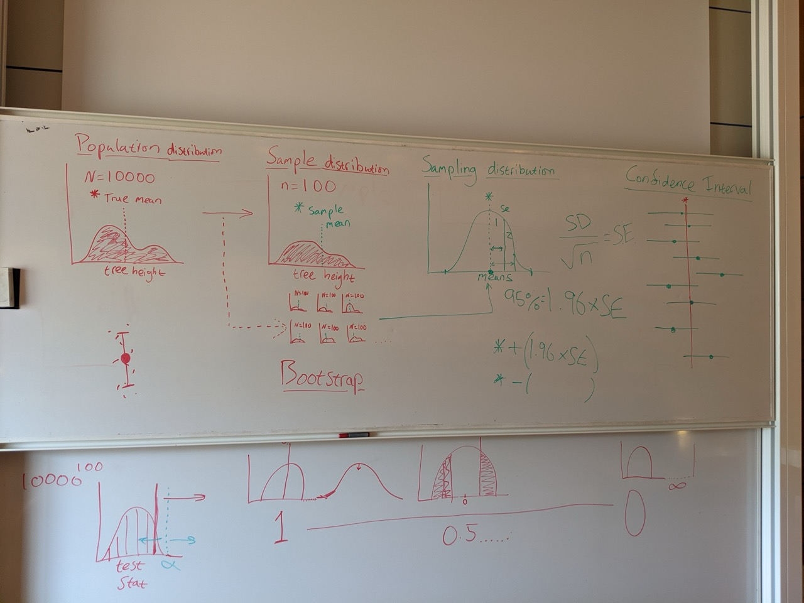

The scientific method
Lecture 2
Why do we do science?
- Why do you do science?
- Why should we do science?
- Discuss!
History of the scientific method
History of the scientific method
Aristotle (384–322 BCE)
- Deductive reasoning, starting from general principles to derive specific conclusions.
- Also claimed women have fewer teeth than men.

History of the scientific method
Ibn al-Haytham (965 - 1040)
- Empirical experimentation and systematic methodology.
- Emphasizing repeatability and criticism of anecdotal evidence.

History of the scientific method
Francis Bacon (1561–1626)
- Inductive reasoning and empiricism.
- Advocated for gathering data through experiments to form generalized theories.
- Critiqued Aristotelian dogma and proposed a methodical, collaborative approach to science.

History of the scientific method
René Descartes (1596–1650)
- Deductive rationalism and skepticism.
- Advocated for doubt as a tool for inquiry, breaking problems into parts (method of doubt).

History of the scientific method
Karl Popper (1902–1994)
- Argued that scientific theories must be testable and falsifiable shifting focus from verification to critical testing. This emphasized the provisional nature of scientific knowledge.
- Positive evidence does not prove a hypothesis. Only negative evidence can disprove one.
- A good scientist is one who tries as hard as they can to falsify their hypothesis.

History of the scientific method
Hypothesis testing (Laplace, Pearson, Fisher)
- A method of statistical inference used to decide whether the data provide sufficient evidence to reject a particular hypothesis
- Used to answer the question: could our results be just due to chance?

The process of inquiry
The process of inquiry
The scientific method
- Make observations
- Formulate a hypothesis
- Design experiment (discuss)
- Conduct the experiment (obtain data)
- Analyze the data
- Formulate conclusion
- Synthesize results with other studies, and determine next steps
The process of inquiry
1. Make observations
The process of inquiry
1. Make observations
- Observe phenomena in the natural world
- Identify patterns or anomalies that spark curiosity
- Can current ideas explain those phenomena?
- Are there competing explanations?
- Observations alone are important!
The process of inquiry
2. Formulate a hypothesis
- Identify an observation
- Formulate a hypothesis that could be tested.
The process of inquiry
2. Formulate a hypothesis
From discussion in lecture:
- Does jump height affect the chance of getting a mate?
- Last man standing - does joining later increase chances of getting a mate?
- Does the length of grass where they live affect their jump height, and does this change if the length of grass is changed?
- Does tail feather length increase the chance of mating?
The process of inquiry
2. Formulate a hypothesis
- Develop a testable and falsifiable statement
- Popper: should rely on as few auxiliary hypotheses as possible.
- Which of these hypotheses meet that criteria?
- “Biodiversity is important”
- “Apply a pesticide to wheat fields 30 days after sowing seeds is more effective than applying it 10 days after sowing seeds”
- “A mutation in gene X will cause increased mortality in the common fruit fly”
- “Gene Y is responsible for human intelligence.”
The process of inquiry
2. Formulate a hypothesis
- Perhaps the most difficult step in science!
- A good hypothesis will help you design your experiment correctly
- Always refer back to your hypothesis
The process of inquiry
2. Formulate a hypothesis
Null hypothesis:
- Posits that the explanatory variable we test does NOT affect our data
- We test the null hypothesis: sufficient evidence to reject it?
Alternative hypothesis:
- Opposite of the Null hypothesis (the explanatory variable affects our data)
- We normally think in terms of an alternative hypothesis
The process of inquiry
3. Design experiment
- What is the population we are interested in?
- How should we collect a sample that is relevant to that population?
The process of inquiry
3. Design experiment
Does the average flowering date of Snödroppssläktet differ between populations in Northern and Southern Sweden?
- Null hypothesis: the average flowering date does not differ between populations in Northern and Southern Sweden
- Alternative hypothesis: the average flowering date does differ between populations in Northern and Southern Sweden

The process of inquiry
3. Design experiment
Does the average flowering date of Snödroppssläktet differ between populations in Northern and Southern Sweden?
- Snow drops in in Skåne and in Värmland
- Snow drops in Sweden
- Snow drops in the world?
The process of inquiry
3. Design experiment
- Population: what we want to know something about
- Sample: what we are able to study
- Use the sample to learn something about the population
The process of inquiry
4. Conduct the experiment (obtain data)
- Perform the experiment as planned
- Collect data systematically and accurately
- Randomisation to reduce bias
The process of inquiry
5. Analyze the data
- What are the chances we would collect the data we did if the null hypothesis was true?
- If the chance is sufficiently low, then we reject the null hypothesis
- If the chance is high, then we fail to reject the null hypothesis
The process of inquiry
5. Analyze the data
- Calcualte the observed test statistic of our population
- Decided by our initial hypothesis
- Average (mean, median), spread (variance, sd, CV), difference in (mean, median, var, sd)
- Create a null distribution of the test statistic (in a world where the null hypothesis is true)
- What values of our test statistic could we observe?
- If we kept taking new samples from our population and calculating our test statistic
- Compare our observed test statistic with the null distribution
The process of inquiry
5. Analyze the data
- What are the chances we would collect the data we did if the null hypothesis was true?
- What are the chances we would have observed our test statistic or a more extreme one, if the null hypothesis was correct?
- This probability is called a p-value
- If the chance (p-value) is sufficiently low, then we reject the null hypothesis
- If the chance (p-value) is high, then we fail to reject the null hypothesis
- What is high and low?
The process of inquiry
5. Analyze the data
We want to find a balance between two types of errors we could make:
- \(\alpha\): type I error (false positive)
- Null hypothesis is TRUE, but we reject it
- \(\beta\): type II error (false negative)
- Null hypothesis is FALSE, but we fail to reject it
The process of inquiry
5. Analyze the data

The process of inquiry
5. Analyze the data
- To decrease our chance of making a type I error (false positive):
- Decrease our \(\alpha\)
- p = 0.05, p = 0.01, p = 0.001?
- However, this increases our chance of making a type II error (false negative):
- To decrease our chance of making a type II error:
- Increase our sample size
- Increase \(\alpha\)
- Can also view p-values as a continuum
The process of inquiry
6. Formulate conclusion
- Describe your findings:
- Describe outcomes of your statistics
- In additional, translate those statistical outcomes back to the original hypothesis
- Most of us are interested in biology, not p-values!
The process of inquiry
7. Synthesize results with other studies, and determine next steps
- Compare findings with existing literature
- Propose future research directions or applications
- Other scientists replicate or build on your work?
The process of inquiry
The scientific method
- Make observations
- Formulate a hypothesis
- Design experiment (discuss)
- Conduct the experiment (obtain data)
- Analyze the data
- Formulate conclusion
- Synthesize results with other studies, and determine next steps
End of lecture whiteboard discussions
